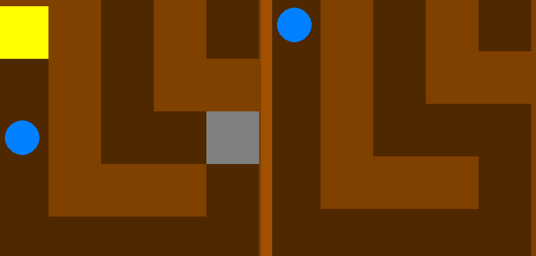
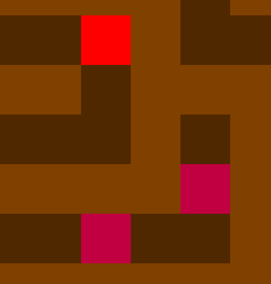

Проект выполнил: Драчев Артём
Вы играете за кружок, который с помощью клавиш WASD нужно доставить в противоположный угол (от красного треугольника - к синему), избегая препятствия.
Для запуска проекта нужно скачать библиотеку pygame и репозиторий с GitHub, или скопировать его командой git clone https://github.com/ArtDr12/labyrinth
Если собрать ключ, замок пропадает.
Ловушки отправляют игрока в начало уровня. Красные стоят на месте, розовые - двигаются по одной оси.
